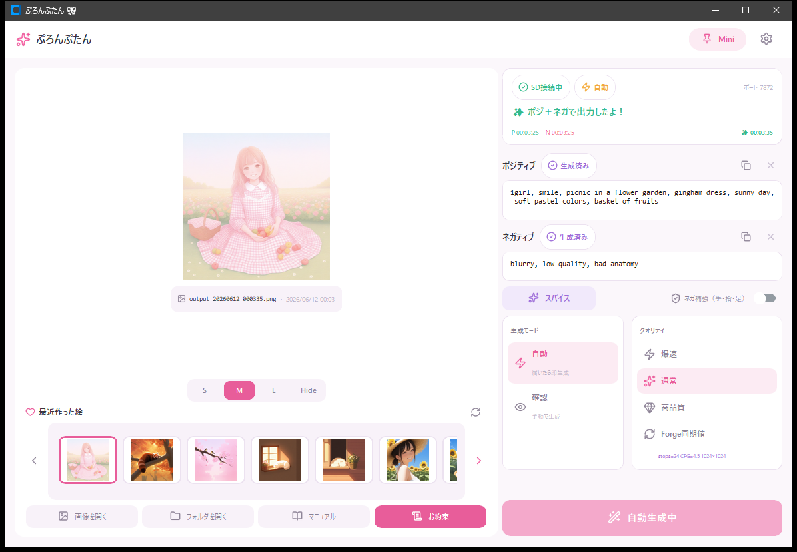
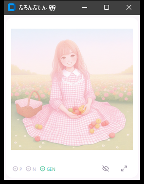

AIチャットの“情景”を、その場で絵にする — AIチャット支援ツール
AIとのチャットで描かれた「情景」を、自動でイラストにして見せてくれる “AIチャットのお供” だよ。会話やロールプレイのなかで「いま、こういう場面」とAIが描写してくれたら、その場面をそのまま Stable Diffusion（Forge）が生成 — 読みながら、絵で見られる。
仕組みはシンプル。AIに専用フォーマット（「📋 お約束」）でプロンプトを書いてもらうと、ブラウザの監視スクリプトがそれを検知 → ぷろんぷたんが受け取って SD へ送り、自動で生成。「AIにプロンプト書いてもらう → コピペ → SDに貼る」の手間はゼロ。チャットに集中したまま、情景がどんどん絵になっていくよ。
※ もともとは「AIチャットの場面を、画像としても出せたらいいな」という発想から生まれた “AIチャット支援ツール” だよ。いまは Claude・ChatGPT・Gemini・Grok・Copilot などのチャット画面に対応してるよ。
start.bat をダブルクリックAIチャットページを監視して、プロンプトを自動検知・送信するスクリプト。
対応サービス：Claude / ChatGPT / Gemini / Grok / Copilot
sd_monitor.user.js の内容を貼り付けて保存@match の並びに自分のURL（例：// @match http://localhost:8080/*）を1行追加してね。Forge のページとぷろんぷたんを双方向につなぐスクリプト。インストール後、Forge のページ右下にボタンが並ぶよ。
AIにプロンプトを書いてもらうとき、専用フォーマットを使う必要があるよ。
「📋 お約束」ボタンを押すとクリップボードにコピーされるから、そのままAIに貼り付けてね！
🔴 masterpiece, best quality, 1girl, ... 🟥 🔵 worst quality, low quality, bad anatomy, ... 🟦

| 表示 | 意味 |
|---|---|
| ✓ SD接続中（緑） | SDに接続できてるよ |
| ○ SD未接続（赤） | SDが見つからない（起動・URLを確認してね） |
| ⚡ 自動 | プロンプト受信したら即生成 |
| 👀 確認 | 手動でボタンを押して生成 |
| ✨ 生成中（明滅） | いま絵を作ってる合図。チップがふわふわ光るよ |
| タイムスタンプ | P=ポジ受信時刻 N=ネガ受信時刻 ✨=生成完了時刻 |
| ピル | 意味 |
|---|---|
| ○ 待機中（灰） | まだ何もない |
| ✓ 受信完了（緑/赤） | プロンプトが届いた（届いた瞬間につくよ） |
| ✓ 手入力 | 自分で入力・編集した内容が入ってる |
| ✓ 生成済み（紫） | この内容はもう絵になった（新しく届くとまた受信完了に戻るよ） |
ポジ・ネガ欄は直接入力もOK！
生成時にポジティブプロンプトへ自動で追記する「おまけ」設定だよ。
手・指・足の解剖学的破綻をネガに自動追記するスイッチ。
右パネルの「💪 ネガ補強（手・指・足）」のチェックボックスをONにするだけ。
内容は ⚙️ 設定から自由に編集できるよ。
| モード | 動作 |
|---|---|
| ⚡ 自動 | ポジ＋ネガが届いたら即生成。ポジだけのときは5秒待ってから生成。 |
| 👀 確認 | プロンプトが届いてもボタンを押すまで生成しない。 |
右上の Mini ボタンで、ポラロイド風の小窓に変身！チャットの隅に置いて、絵が届くのを眺めながら会話できるよ。

| ランプ | 意味 |
|---|---|
| P / N がペカペカッと点滅→点灯 | 新しいプロンプトが届いた！ |
| GEN が橙色でふわふわ明滅 | いま生成中 |
| GEN が緑のチェック | 生成完了 |
| P / N が薄いチェックに戻る | この受信ぶんは絵にできたよ、の合図（次が届くとまた点灯） |
| プリセット | Steps | サンプラー |
|---|---|---|
| ⚡ 爆速 | 12 | Euler a |
| ✨ 通常 | 28 | DPM++ 2M Karras |
| 💎 高品質 | 45 | DPM++ 2M Karras |
| 🔄 Forge同期値 | Forgeから取得した値 | |
右上の歯車マークから開けるよ。
| 項目 | 説明 |
|---|---|
| SD接続設定 | Stable Diffusion の URL（デフォルト: http://127.0.0.1:7860） |
| Forge設定 | Forgeから設定を取り込むボタン |
| 保存先フォルダ | 生成画像の保存場所 |
| CFG・横px・縦px | 生成パラメーター |
| 検知マーカー | プロンプトを囲む絵文字（変えたらお約束も更新してね） |
| スパイス内容 1〜9 | 各スパイスのテキスト |
| ネガ補強テンプレート | 補強で追記されるネガの内容 |
| ボタン | 機能 |
|---|---|
| 🖼️ 画像を開く | 最後に生成した画像をビューアーで開く |
| 📁 フォルダを開く | 保存先フォルダをエクスプローラーで開く |
| 📖 マニュアル | このマニュアルをブラウザで開く |
| 📋 お約束 | AIへのお約束をクリップボードにコピー |
sd_monitor.user.js がインストールされているか確認。ぷろんぷたんが起動しているか確認。
Stable Diffusion（Forge）が起動しているか確認。設定のURLが正しいか確認。
仕様です。同じ内容の連続自動生成を防ぐため、オレンジ色で「同じプロンプトだからスキップ！（ボタンで作れるよ）」と案内が出ます。生成ボタンを押せば何度でも作れます（シードは毎回ランダムだから違う絵になるよ）。
10文字未満のプロンプトは自動でスキップされます。